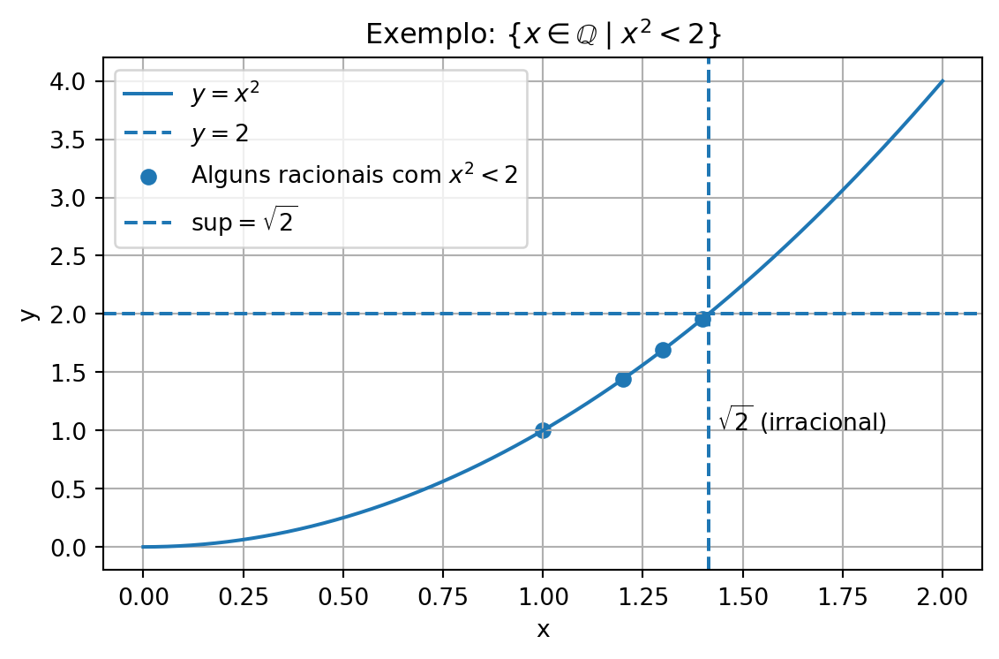

Exploramos conceitos estruturais (irracionalidade de √2, enumerabilidade, diagonal de Cantor, finitude decimal) e as propriedades que tornam ℝ um corpo ordenado completo.
Demonstrar que \(\sqrt{2}\) é irracional (redução ao absurdo);
Discutir enumeráveis vs. não enumeráveis;
Apresentar o método diagonal de Cantor (reais não enumeráveis; racionais enumeráveis com filtragem por \(mdc\));
Provar quando um racional tem decimal finita (denominador com fatores só 2 e/ou 5);
Resumir por que \(\mathbb{R}\) é um corpo ordenado completo (axioma do supremo);
Visualizar \(\{x\in\mathbb{Q}\mid x^2<2\}\) via Python;
Consolidar com exercícios comentados.
1.1 🧠 Aprofundamento: Demonstração de que \(\sqrt{2}\) não é racional
Nota🧠 Prova por redução ao absurdo: \(\sqrt{2}\notin\mathbb{Q}\)
Proposição.\(\sqrt{2}\) é irracional.
Prova. Suponha, por absurdo, \(\sqrt{2}=\frac{a}{b}\) com \(a,b\in\mathbb{Z}\), \(b\neq 0\), e \(mdc(a,b)=1\). Elevando ao quadrado: \(2=\frac{a^2}{b^2}\Rightarrow a^2=2b^2\). Logo, \(a^2\) é par, então \(a=2k\). Substituindo: \(4k^2=2b^2\Rightarrow b^2=2k^2\), portanto \(b\) é par. Contradição, pois \(a\) e \(b\) seriam ambos pares \(\Rightarrow mdc(a,b)\ge2\). Conclui-se que \(\sqrt{2}\notin\mathbb{Q}\). \(\square\)
1.2 🧠 Aprofundamento: Comentário sobre redução ao absurdo
Importante🧠 Sobre a técnica de prova
A técnica assume a negação do que se quer provar e extrai uma contradição lógica. No caso de \(\sqrt{2}\), a hipótese de racionalidade força \(a\) e \(b\) a serem ambos pares, contrariando a irredutibilidade. Logo, a hipótese é falsa.
1.3 🧠 Aprofundamento: Conjuntos enumeráveis e não enumeráveis
Nota🧠 Enumerável vs. não enumerável
Enumerável (contável): admite bijeção com \(\mathbb{N}\) → pode-se listar os elementos (talvez com ordem não natural). Exemplos: \(\mathbb{N}\), \(\mathbb{Z}\), \(\mathbb{Q}\).
Não enumerável (incontável): não admite tal listagem; tem “mais” elementos que \(\mathbb{N}\). Ex.: \(\mathbb{R}\) (e, portanto, \(\mathbb{R}\setminus\mathbb{Q}\)).
1.4 🧠 Aprofundamento: O método diagonal e os reais não enumeráveis
Importante🧠 Método diagonal de Cantor: \([0,1]\) não é enumerável
Suponha que se liste todos os reais em \([0,1]\): \(x_1,x_2,\dots\), com expansões decimais \(x_i=0.a_{i1}a_{i2}\ldots\). Constrói-se \(y=0.b_1b_2\ldots\) escolhendo \(b_n\neq a_{nn}\). Assim, \(y\) difere de todo\(x_n\) no dígito \(n\), logo não está na lista. Contradição. Portanto, \(\mathbb{R}\) (já em \([0,1]\)) é não enumerável.
Método diagonal de Cantor — reais
Crédito: Jochen Burghardt — CC BY-SA 3.0.
1.5 🧠 Aprofundamento: Enumerabilidade de \(\mathbb{Q}\)
NotaEnumerar racionais sem duplicatas (diagonais + mdc)
Escreva todos os pares \((p,q)\in\mathbb{N}\times\mathbb{N}\) numa tabela;
Percorra por diagonais de soma \(p+q=k\) (para \(k=2,3,4,\ldots\));
Liste \(\tfrac{p}{q}\)somente quando \(\gcd(p,q)=1\) (irredutível) → evita repetições.
Sequência inicial (positivos): \[
\frac{1}{1},\ \frac{1}{2},\ \frac{2}{1},\ \frac{1}{3},\ \frac{3}{1},\ \frac{1}{4},\ \frac{2}{3},\ \frac{3}{2},\ \frac{4}{1},\ \ldots
\] Para negativos e \(0\), intercale sinais e inclua \(0=\frac{0}{1}\).
Ideia clássica (ver, por exemplo, Courant & John).
Método diagonal — racionais
Crédito: Cronholm144 — CC BY-SA 3.0.
1.6 🧠 Aprofundamento: Finitude da representação decimal
Importante🧠 Teorema: decimal finita ⇔ denominador (irredutível) com fatores só 2 e/ou 5
Se \(\tfrac{a}{b}\) está irredutível, então sua decimal é finitase e somente se\(b\) tem apenas fatores primos \(2\) e \(5\). Ideia da prova: escrever \(\tfrac{a}{b}\) com denominador \(10^n=2^n\cdot5^n\); isso só é possível se \(b\) (já simplificado) não contiver primos além de \(2\) e \(5\).
1.7 🧠 Aprofundamento: \(\mathbb{R}\) como corpo ordenado completo
Nota🧠 Estrutura de \(\mathbb{R}\)
Corpo \((\mathbb{R},+,\cdot)\): leis aditivas e multiplicativas usuais, distributividade e inversos (exceto para \(0\) na multiplicação). Ordem total \(\le\) compatível: tricotomia; \(a\le b\Rightarrow a+c\le b+c\); \(0\le a,0\le b\Rightarrow 0\le ab\). Completude (axioma do supremo): todo subconjunto não vazio e limitado superiormente tem supremo em \(\mathbb{R}\).
Isso falha em \(\mathbb{Q}\).
1.8 🧠 A propriedade de completude: exemplo central
Considere \(A=\{x\in\mathbb{Q}\mid x^2<2\}\). \(A\) é limitado superiormente (por exemplo, por \(2\), ou mesmo por \(1{,}5\), \(1{,}42\), 9,9, etc.). Em \(\mathbb{Q}\), não existe o supremo: o candidato natural seria \(\sqrt{2}\), mas \(\sqrt{2}\notin\mathbb{Q}\). Em \(\mathbb{R}\), \(\sup A=\sqrt{2}\).
Nota👨💻 🐍 Python — Visualização de {\(x\in\mathbb{Q}\mid x^2<2\)}
import matplotlib.pyplot as pltimport numpy as npfrom pathlib import Pathimport os# Domínio e curvax = np.linspace(0, 2, 400)y = x**2# Alguns racionais com x^2 < 2rational_x = np.array([1.0, 1.2, 1.3, 1.4])rational_y = rational_x**2sqrt2 = np.sqrt(2)plt.figure(figsize=(6, 4))plt.plot(x, y, label=r'$y = x^2$')plt.axhline(2, linestyle='--', label=r'$y = 2$')plt.scatter(rational_x, rational_y, label=r'Alguns racionais com $x^2 < 2$')# Marca do supremo em ℝplt.axvline(sqrt2, linestyle='--', label=r'$\sup = \sqrt{2}$')plt.text(sqrt2 +0.02, 1, r'$\sqrt{2}$(irracional)')plt.title(r'Exemplo: $\{x \in \mathbb{Q} \mid x^2 < 2\}$')plt.xlabel('x'); plt.ylabel('y')plt.grid(True); plt.legend(); plt.tight_layout()# Salvar figura (para reutilizar no site)try: base = Path(__file__).parent.resolve()exceptNameError: base = Path(os.getcwd()).resolve()out = (base /".."/"images"/"grafico_completude.png").resolve()plt.savefig(out, dpi=150, bbox_inches="tight")plt.show()

Conjunto {x ∈ ℚ | x² < 2} frente a y=x², com marcação de √2 como supremo em ℝ.
1.9 🧠 Exercícios de Revisão
Nota🧠 Exercícios de Revisão — Aprofundamento
Classifique como enumerável ou não enumerável: \(\mathbb{N}\), \(\mathbb{Z}\), \(\mathbb{Q}\), \(\mathbb{R}\), irracionais positivos.
Descreva o método diagonal para provar que \([0,1]\) é não enumerável.
Explique “corpo ordenado completo” com suas palavras.
Prove por absurdo que \(\sqrt{2}\notin\mathbb{Q}\).
Mostre que a decimal de um racional é finita ou periódica.
Por que não existe racional com decimal infinita não periódica?
Defina conjunto enumerável e justifique por que \(\mathbb{Q}\) é enumerável (esboço por diagonais).
Mostre que \(\mathbb{N}\times\mathbb{N}\) é enumerável.
Dê um exemplo que mostre que a completude falha em \(\mathbb{Q}\).
Encontre a fração geratriz de \(x=0{,}142857\,142857\ldots\).
1.10 📝 Resoluções Comentadas
Importante📝 Resoluções Comentadas
\(\mathbb{N}\), \(\mathbb{Z}\), \(\mathbb{Q}\): enumeráveis. \(\mathbb{R}\) e os irracionais positivos: não enumeráveis.
Construa um número que difere da diagonal de uma lista supostamente completa de decimais; o número construído não está na lista.
Estrutura com \(+,\times,\le\) usuais e axioma do supremo: todo conjunto não vazio e limitado superiormente tem supremo em \(\mathbb{R}\).